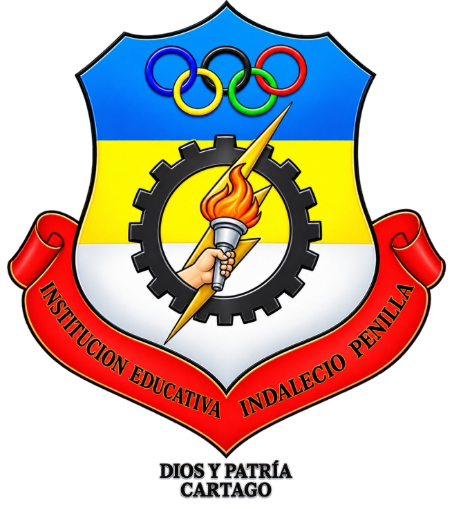
ITI Científicos
Institución Educativa Instituto Técnico Industrial Indalecio Penilla

 Colectivo Trazos de Infancia
Colectivo Trazos de InfanciaCartago · 2026
Datos de la portada institucional
Institución Educativa Instituto Técnico Industrial Indalecio Penilla
Zona · Urbana
Dirección · Sede principal: Calle 43#2-199 Santa Ana. Sede Antonio Nariño: Calle 37#1ª-34 San Pablo. Sede Manuela Beltrán: Calle 52#3-54 Santa Ana. Sede Roberto Delgado: Calle 51#2-30 Santa Ana.
Correo institucional · Ieindaleciopenilla@hotmail.com; ieindaleciopenilla@semcartago.gov.co
Compendio original · Páginas 38 a 50
Maestras expositoras
- Sandra Milena Agudelo Botero · Transición mañana, Sede Antonio Nariño
samydisfraz@hotmail.com - Isabel Cristina Duque Méndez · Transición tarde, Sede Antonio Nariño
Cris_duque0191@hotmail.com - Zuleni Castañeda Valencia · Transición, Sede Manuela Beltrán
zulenicastaneda@indalecio.edu.co
Experiencia significativa en educación inicial de la Institución Educativa Indalecio Penilla, de Cartago, tal como la presentaron sus maestras en el compendio del colectivo Trazos de Infancia.
PDF · 10 págs. · 342 KBResumen
Los grados Transición en la Institución Educativa Indalecio Penilla tuvo una experiencia significativa que impulsó el aprendizaje a través de la exploración y el juego. Los niños participaron con entusiasmo presentando experimentos sencillos, como volcanes caseros hechos con bicarbonato y vinagre, además de otras actividades que despertaron su curiosidad por los fenómenos naturales. Durante la jornada los pequeños demostraron habilidades de observación, formulación de preguntas, trabajo en equipo, comunicación y creatividad al explicar sus experimentos a docentes, compañeros y familias. Esta experiencia fortaleció el pensamiento científico desde la primera infancia, incentivando el aprendizaje activo y el desarrollo de competencias básicas. Asimismo, favoreció la confianza, la expresión oral y el interés por descubrir cómo ocurren diferentes procesos en su entorno. La actividad evidenció el compromiso de la comunidad educativa con una enseñanza basada en la experimentación y el descubrimiento, convirtiéndose en un espacio enriquecedor donde los estudiantes fueron protagonistas de su propio aprendizaje y reafirmaron que la ciencia puede aprenderse de manera divertida, significativa y acorde con su edad.
Problema o necesidad
La experiencia significativa surge de la necesidad de fortalecer en los niños y niñas de grado transición el interés por explorar, preguntar, observar y comprender los fenómenos de su entorno mediante experiencias concretas y significativas. En esta etapa del desarrollo es fundamental ofrecer espacios en los que los niños puedan aprender a través de la experimentación, la manipulación de materiales, el juego y la formulación de preguntas, favoreciendo así el desarrollo de habilidades cognitivas, comunicativas, sociales y emocionales.
En el contexto escolar se identificó la importancia de superar prácticas centradas exclusivamente en actividades de observación o reproducción de contenidos, promoviendo experiencias en las que los niños fueran protagonistas de su propio aprendizaje. Por esta razón, se propuso la realización de una feria científica, en la cual los estudiantes tuvieron la oportunidad de acercarse de manera sencilla y lúdica al pensamiento científico a través de experimentos básicos, como la elaboración de volcanes caseros con bicarbonato y otros materiales de fácil acceso.
La experiencia se desarrolló con los estudiantes de grado transición de la Institución Educativa Indalecio Penilla, como parte de las estrategias pedagógicas orientadas a favorecer aprendizajes significativos desde la educación inicial. Las actividades fueron diseñadas teniendo en cuenta las características, intereses, capacidades y ritmos de aprendizaje propios de los niños y niñas de esta edad.
Esta experiencia responde directamente al contexto de los niños y niñas, aprovechando materiales cotidianos y situaciones cercanas a su realidad para demostrar que la ciencia está presente en la vida diaria. De esta manera, se favorece una educación contextualizada, activa y participativa, en la que el aprendizaje parte de la curiosidad natural de los estudiantes y de su deseo de conocer el mundo que los rodea.
Se promovió la participación activa de los estudiantes, respetando sus ritmos y formas de expresión, y se vinculó a las familias como apoyo al proceso.
De esta manera, la experiencia contribuye al desarrollo integral de los niños y niñas, fortaleciendo no solo sus capacidades cognitivas y científicas iniciales, sino también su lenguaje, creatividad, autonomía, convivencia, seguridad para expresarse y capacidad para aprender junto a otros. La feria científica se consolidó, así como una oportunidad para reconocer que los niños son capaces de preguntar, investigar, descubrir y construir conocimientos desde sus propias experiencias.
Objetivo(s)
- Despertar la curiosidad y el interés de los niños y niñas por los fenómenos presentes en su entorno cotidiano.
- Promover la capacidad de observar, preguntar, explorar, anticipar resultados y expresar explicaciones sencillas a partir de experiencias concretas.
- Favorecer el desarrollo del pensamiento lógico y científico mediante la realización de experimentos sencillos, seguros y apropiados para la edad.
- Fortalecer las habilidades comunicativas mediante la expresión oral de ideas, preguntas, observaciones, descubrimientos y conclusiones.
- Estimular la creatividad y la capacidad de resolver situaciones sencillas mediante la manipulación y utilización de diferentes materiales.
- Potenciar la autonomía, la confianza y la participación activa de los niños y niñas durante el desarrollo de las experiencias.
- Promover el trabajo colaborativo, el respeto por las ideas de los demás y la construcción colectiva de aprendizajes.
- Vincular a las familias en el proceso de exploración y experimentación, fortaleciendo la relación entre familia, escuela y comunidad.
- Generar espacios de socialización, como la Feria Científica, donde los niños y niñas puedan compartir sus experiencias, mostrar sus producciones y reconocer sus propios logros.
- Contribuir al desarrollo integral de los niños y niñas mediante una experiencia pedagógica que articule las dimensiones cognitiva, comunicativa, corporal, socioemocional, artística y social.
Metodología
La experiencia significativa «ITI Científicos» se desarrolló mediante una metodología activa, participativa, lúdica y basada en la exploración del entorno, reconociendo a los niños y niñas de grado Transición como protagonistas de sus propios aprendizajes. Se partió de sus intereses, preguntas, conocimientos previos y curiosidad natural para acercarlos al pensamiento científico de manera sencilla, divertida y acorde con sus características y ritmos de aprendizaje.
En la fase de planeación, se identificaron las necesidades e intereses de los estudiantes y se seleccionaron experimentos sencillos, seguros y apropiados para su edad, utilizando materiales de fácil acceso y relacionados con situaciones de la vida cotidiana. Se organizaron las actividades teniendo en cuenta los propósitos de aprendizaje y el desarrollo integral de los niños, articulando diferentes dimensiones como la comunicativa, cognitiva, corporal, artística y socioemocional. Se diseñaron preguntas orientadoras, actividades de observación, exploración, manipulación y socialización.
Durante la implementación, se desarrollaron experiencias prácticas como la elaboración de volcanes caseros utilizando bicarbonato y otros materiales, además de diferentes actividades de experimentación. Antes de cada experiencia se invitó a los niños a observar los materiales, formular preguntas y expresar lo que creían que podía suceder. Posteriormente participaron directamente en los procedimientos, observaron los cambios producidos y compartieron sus interpretaciones.
La docente asumió el papel de mediadora y orientadora, utilizando preguntas abiertas para estimular la curiosidad y el pensamiento: ¿qué creen que sucederá?, ¿por qué pasó?, ¿qué observamos?, ¿qué podemos hacer diferente? De esta manera, se favorecieron procesos iniciales de formulación de hipótesis, observación, comparación, experimentación y construcción de explicaciones sencillas.
Como mecanismos de seguimiento y valoración se utilizaron la observación directa, registros de las experiencias, producciones de los niños, participación oral, evidencias fotográficas y valoración de los aprendizajes, teniendo en cuenta tanto los avances individuales como la participación en las actividades grupales.
En la fase de comunicación y divulgación, se generaron espacios para que los estudiantes socializaran sus experiencias y mostraran a otros integrantes de la comunidad educativa los experimentos realizados. La Feria Científica permitió visibilizar los aprendizajes alcanzados y reconocer las capacidades de los niños para observar, preguntar, explicar y compartir sus descubrimientos.
La participación de las familias fue un elemento importante para el fortalecimiento de la experiencia, mediante el acompañamiento en la preparación de algunos materiales y el apoyo a los niños en las actividades propuestas. Esto permitió extender la exploración científica al hogar y fortalecer los vínculos entre familia y escuela.
La comunidad educativa participó como acompañante y espectadora de los procesos desarrollados, reconociendo el valor de generar experiencias pedagógicas en las que los niños puedan aprender haciendo. La apropiación de la experiencia se evidenció en el entusiasmo y participación de los estudiantes, el acompañamiento familiar y la disposición institucional para generar espacios de socialización y reconocimiento de los aprendizajes.
En este sentido, la metodología permitió que la Feria Científica trascendiera la realización de experimentos aislados y se consolidara como una estrategia pedagógica para favorecer la curiosidad, creatividad, autonomía, comunicación, pensamiento científico inicial, trabajo colaborativo y desarrollo socioemocional, contribuyendo de manera integral a los procesos de aprendizaje de los niños y niñas de Transición.
Innovación
«ITI científicos» incorpora una propuesta innovadora al proceso educativo de grado Transición, al acercar a los niños y niñas al pensamiento científico desde una perspectiva lúdica, participativa, experimental y contextualizada. La innovación radica en transformar materiales cotidianos y de fácil acceso en recursos pedagógicos que permiten a los estudiantes aprender mediante la observación, la manipulación, la experimentación y el descubrimiento.
Se realizó un cambio significativo en la manera de abordar los procesos de enseñanza y aprendizaje, pasando de actividades principalmente dirigidas por el adulto a experiencias en las que los niños y niñas tienen un papel activo como exploradores, investigadores y protagonistas. A partir de preguntas sencillas como ¿qué creen que va a pasar?, ¿por qué sucedió?, ¿qué podemos cambiar?, los estudiantes formularon sus propias ideas, anticiparon resultados, observaron transformaciones y comunicaron sus descubrimientos.
Uno de los principales elementos innovadores fue el aprovechamiento de materiales de uso cotidiano, como bicarbonato y otros elementos de fácil consecución, para desarrollar experimentos sencillos y significativos. Esto permitió demostrar que para acercarse a la ciencia no se requieren recursos sofisticados, sino oportunidades para explorar, preguntar y encontrar explicaciones a fenómenos cercanos a su realidad.
La experiencia también innovó en la organización de los espacios de aprendizaje, convirtiendo el aula y posteriormente la Feria Científica en escenarios de exploración, interacción y socialización. Los niños y niñas tuvieron la oportunidad de mostrar sus experiencias, explicar lo observado y compartir sus aprendizajes con sus compañeros, familias y otros integrantes de la comunidad educativa.
Como recursos de apoyo se utilizaron registros escritos, producciones infantiles, fotografías y evidencias del proceso, permitiendo documentar los avances y hacer visible el aprendizaje. Estos recursos facilitaron además la comunicación de la experiencia y el reconocimiento de los logros alcanzados por los estudiantes.
Entre los principales aportes al proceso de enseñanza-aprendizaje se encuentran el fortalecimiento de la curiosidad, creatividad, pensamiento lógico y científico inicial, capacidad de observación, expresión oral, autonomía, resolución de problemas y trabajo colaborativo. Asimismo, la experiencia favoreció la confianza de los niños y niñas para expresar sus ideas, formular preguntas y participar activamente en la construcción de conocimientos.
La participación de las familias constituye igualmente un componente innovador, al permitir que la exploración y el interés por la ciencia trasciendan el espacio escolar y lleguen al hogar. De esta manera, se fortalecen los vínculos entre familia y escuela y se reconoce el entorno cotidiano como un escenario permanente de aprendizaje.
En conclusión, la innovación de esta experiencia consiste en hacer de la ciencia una vivencia cercana, accesible y significativa para los niños y niñas de Transición, utilizando el juego, la exploración y la experimentación como medios para aprender y desarrollar integralmente sus capacidades. La Feria Científica no se limita a presentar resultados, sino que hace visible el proceso mediante el cual los estudiantes preguntan, exploran, descubren, construyen explicaciones y comparten sus aprendizajes.
Seguimiento y valoración
El seguimiento y la valoración de la experiencia significativa «ITI Científicos» se desarrolla de manera continua, participativa y formativa, teniendo en cuenta los procesos de exploración, observación, experimentación, comunicación y reflexión de los niños y las niñas del grado Transición.
La metodología parte de la observación directa y sistemática de la participación de los estudiantes durante las diferentes experiencias científicas, especialmente en actividades como la exploración de materiales, formulación de preguntas, elaboración de hipótesis sencillas, realización de experimentos y socialización de los resultados. Se valoran aspectos relacionados con la curiosidad, la iniciativa, la capacidad para expresar ideas, el trabajo colaborativo, el seguimiento de instrucciones, el cuidado de los materiales y la capacidad para establecer relaciones entre lo observado y sus experiencias cotidianas.
Como mecanismos de seguimiento se utilizan registros de observación, listas de cotejo, producciones gráficas de los estudiantes, fotografías y videos de las experiencias, registros anecdóticos, evidencias de los experimentos y muestras de los trabajos realizados. Estos instrumentos permiten identificar avances, dificultades, intereses y necesidades de acompañamiento, así como realizar ajustes oportunos a las actividades pedagógicas.
La valoración se realiza desde un enfoque cualitativo, integral y formativo, reconociendo los diferentes ritmos y formas de aprendizaje de los niños. No se centra únicamente en el resultado final del experimento, sino en el proceso vivido por cada estudiante: cómo observa, pregunta, propone, experimenta, comunica sus descubrimientos y participa con sus compañeros.
La experiencia significativa «ITI Científicos» se ha transformado progresivamente a partir de los resultados obtenidos mediante la observación, el seguimiento y la valoración de los aprendizajes de los niños y las niñas. Inicialmente, las actividades científicas se orientaban principalmente a la realización de experimentos sencillos; posteriormente, se ha fortalecido una metodología basada en la exploración, la curiosidad, la formulación de preguntas, la predicción, la experimentación y la comunicación de los descubrimientos.
A partir de la autorreflexión docente, se identificó la importancia de permitir que los estudiantes asumieran un papel cada vez más activo en las experiencias, pasando de ser observadores de los experimentos a participar en la selección de materiales, planteamiento de ideas, realización de procedimientos y explicación de lo ocurrido. Esto permitió ajustar las actividades a sus intereses, conocimientos previos y diferentes ritmos de aprendizaje.
Los resultados evaluativos también han permitido incorporar estrategias más lúdicas, participativas y significativas, utilizando materiales concretos y elementos del entorno cercano. Se han fortalecido actividades que integran diferentes dimensiones del desarrollo infantil, especialmente las dimensiones cognitiva, comunicativa, corporal, artística y socioemocional, favoreciendo el trabajo colaborativo, la expresión oral, la creatividad y la capacidad de relacionar los fenómenos observados con situaciones de la vida cotidiana.
Así, ITI Científicos se consolida como una experiencia pedagógica en permanente construcción, que se transforma de acuerdo con las necesidades, intereses y aprendizajes de los niños, y con la reflexión permanente de la docente sobre su práctica. Esta evolución ha permitido fortalecer una cultura de exploración científica desde la educación inicial, reconociendo a los niños y niñas como protagonistas de sus propios descubrimientos.
Resultados
Se ha permitido alcanzar logros significativos en los procesos de aprendizaje y desarrollo integral de los niños y niñas del grado Transición.
Entre los principales resultados se destacan:
- Fortalecimiento de la curiosidad y el interés por la ciencia, evidenciado en la formulación espontánea de preguntas y en el deseo de explorar y conocer cómo y por qué ocurren diferentes fenómenos.
- Desarrollo de habilidades de pensamiento científico, mediante la observación, comparación, formulación de predicciones sencillas, experimentación y construcción de explicaciones a partir de lo observado.
- Mayor participación y autonomía en las actividades, pasando de seguir instrucciones a proponer ideas, manipular materiales, realizar experiencias y expresar sus propios descubrimientos.
- Fortalecimiento de la comunicación oral, al permitir que los niños describan procedimientos, expresen sus hipótesis, narren lo sucedido y compartan sus conclusiones con compañeros, docentes y familias.
- Desarrollo del trabajo colaborativo, promoviendo el respeto por las ideas de los demás, la cooperación, la escucha y el uso responsable de los materiales.
- Integración de las diferentes dimensiones del desarrollo infantil, articulando los aprendizajes científicos con actividades comunicativas, cognitivas, corporales, artísticas y socioemocionales.
- Mayor capacidad para relacionar los aprendizajes con situaciones de la vida cotidiana, comprendiendo que la ciencia está presente en su entorno y puede ser explorada mediante experiencias sencillas y significativas.
- Participación de las familias y la comunidad educativa, especialmente mediante el acompañamiento en experiencias de exploración y la socialización de los resultados obtenidos.
En términos generales, la experiencia ha favorecido que los niños y niñas se reconozcan como protagonistas de sus propios aprendizajes, desarrollando una actitud de curiosidad, exploración, creatividad y asombro frente al mundo que los rodea. Los resultados evidencian que el acercamiento temprano a la ciencia, mediante estrategias lúdicas y experimentales, contribuye al desarrollo de aprendizajes significativos y al fortalecimiento de competencias para la vida.
Maestras e institución
- Sandra Milena Agudelo Botero (Transición mañana, Sede Antonio Nariño): samydisfraz@hotmail.com
- Isabel Cristina Duque Méndez (Transición tarde, Sede Antonio Nariño): Cris_duque0191@hotmail.com
- Zuleni Castañeda Valencia (Transición, Sede Manuela Beltrán): zulenicastaneda@indalecio.edu.co
- Institución: Institución Educativa Instituto Técnico Industrial Indalecio Penilla, zona urbana, Sede principal: Calle 43#2-199 Santa Ana. Sede Antonio Nariño: Calle 37#1ª-34 San Pablo. Sede Manuela Beltrán: Calle 52#3-54 Santa Ana. Sede Roberto Delgado: Calle 51#2-30 Santa Ana. Ieindaleciopenilla@hotmail.com · ieindaleciopenilla@semcartago.gov.co
Así se ve en el libro
10 páginas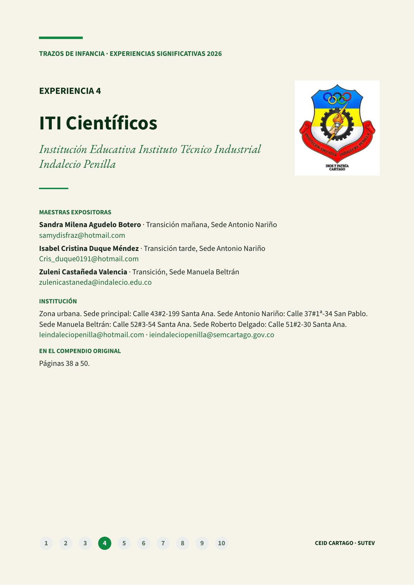
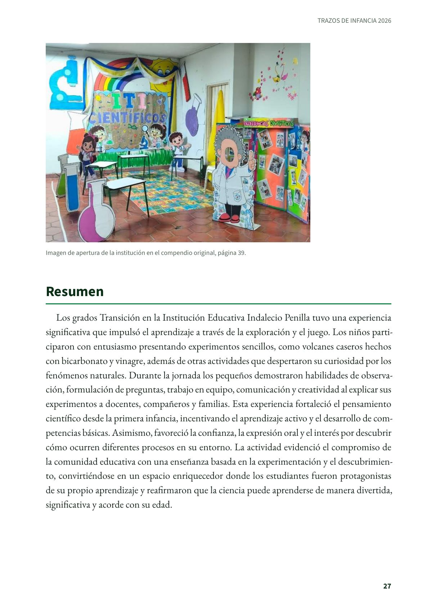
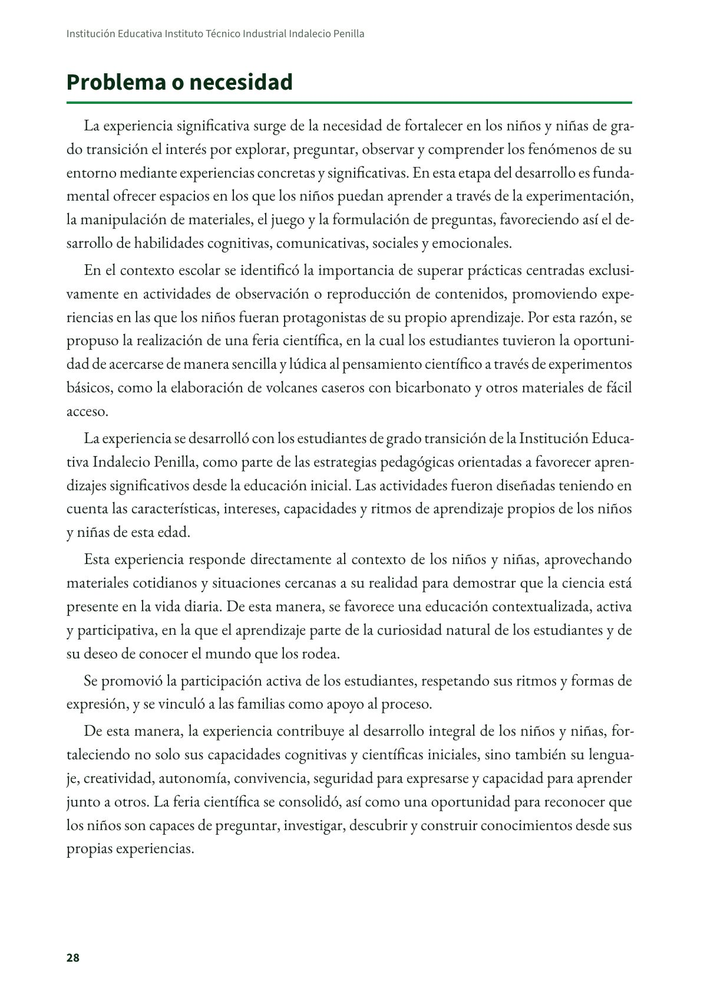
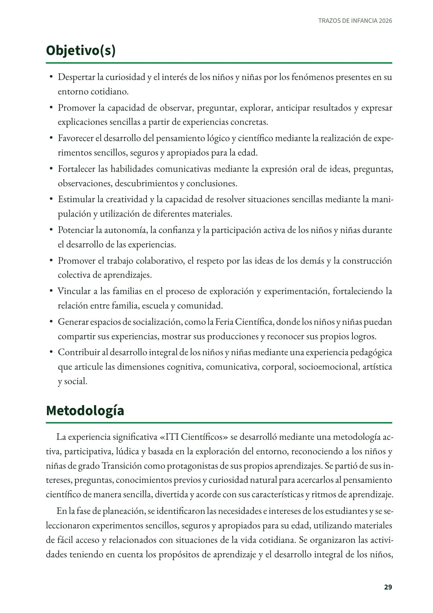
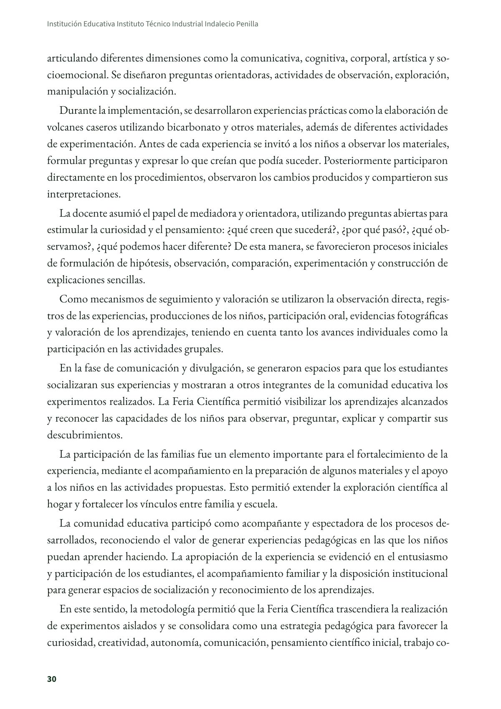
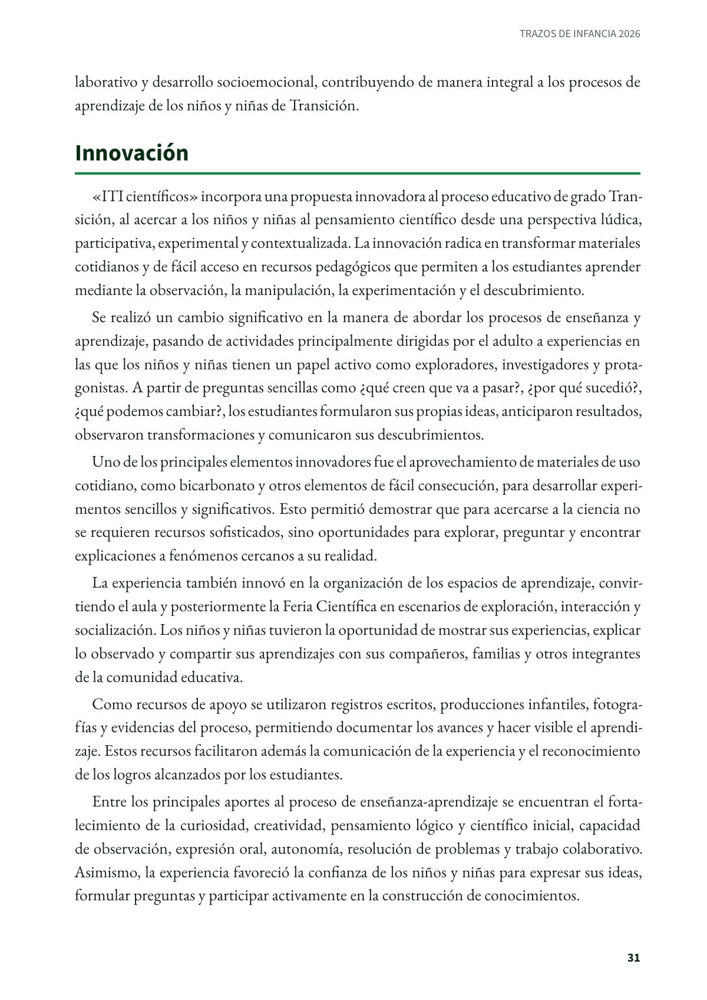
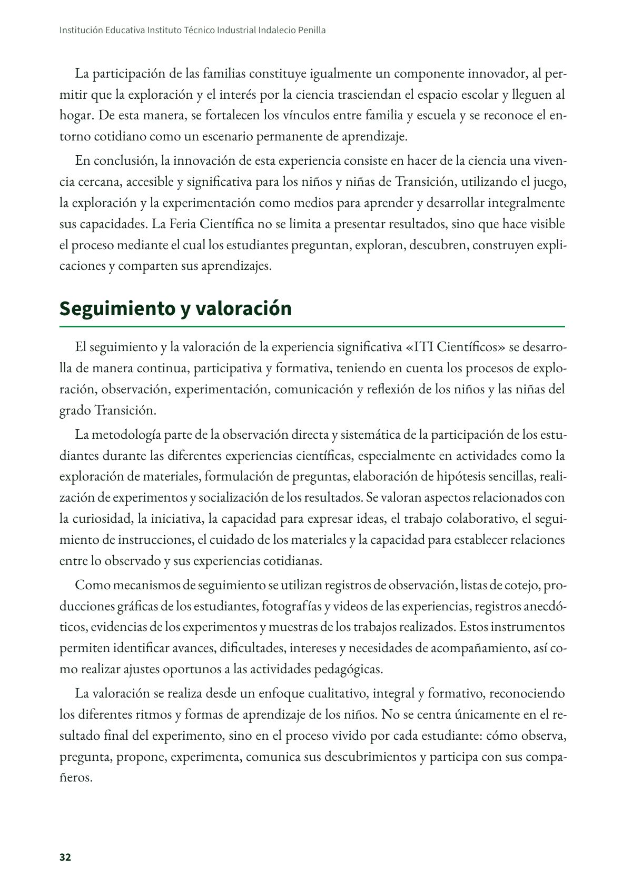
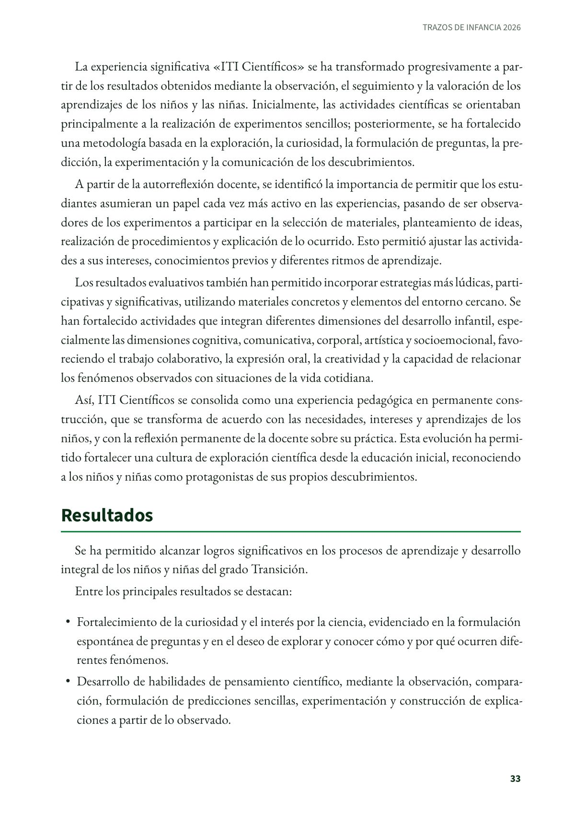
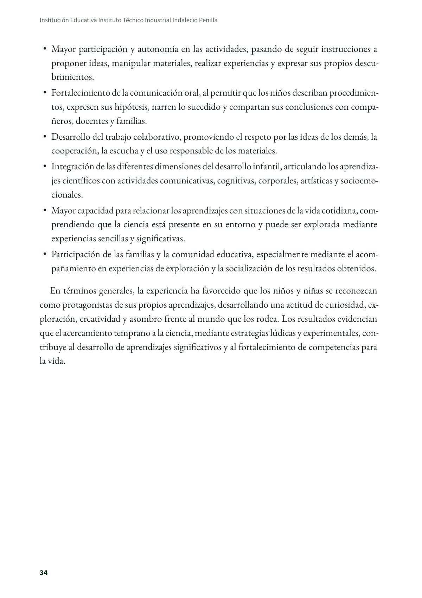
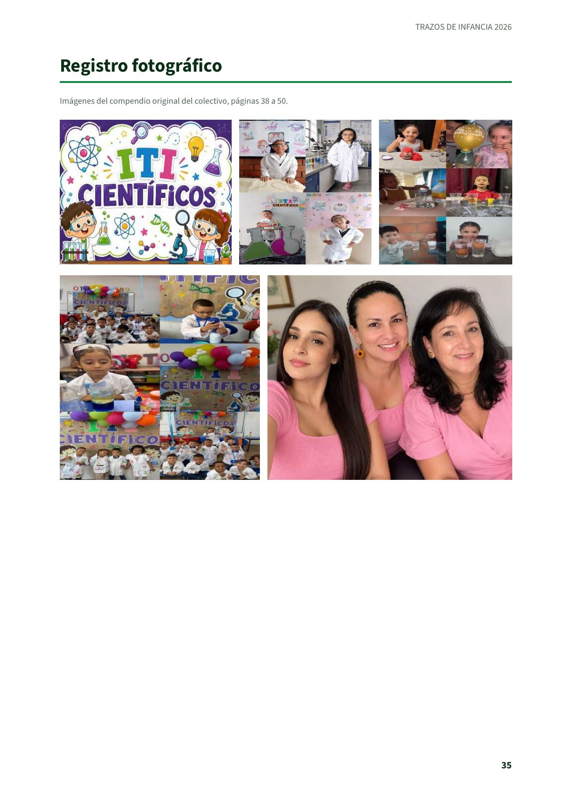